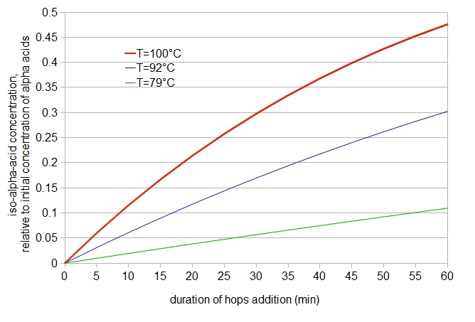
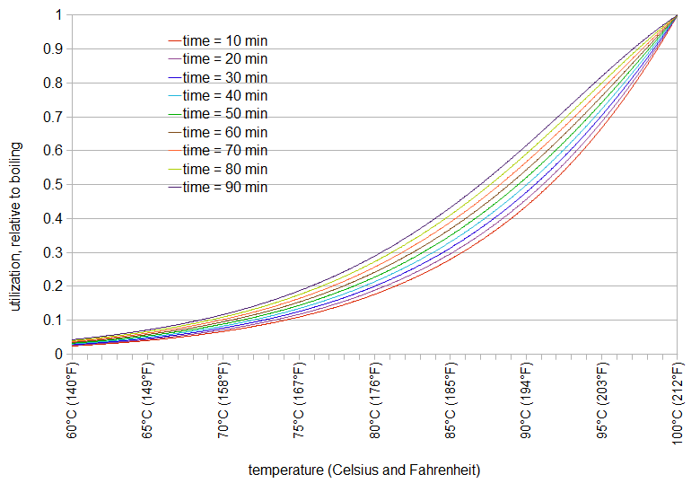
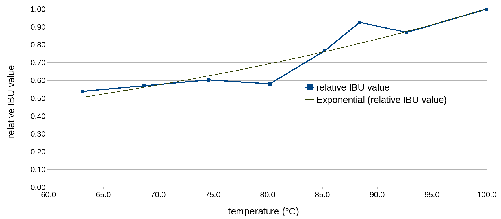
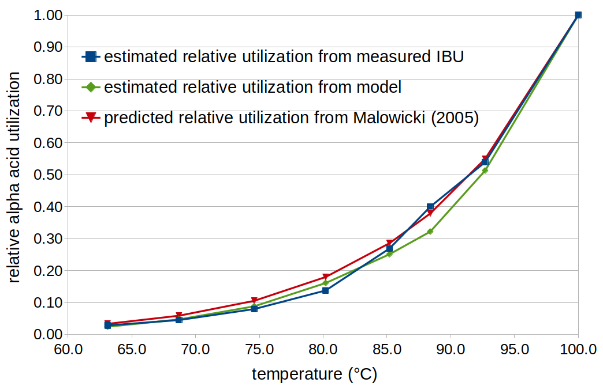

Abstract
In a previous post, "A Modified IBU Calculation (Especially for Late Hopping and Whirlpool Hops)", one of the components of the modified Tinseth IBU formula is an estimation of relative α-acid utilization at below-boiling temperatures. The current experiment investigates this relative utilization as a function of temperature. One result of this experiment is that the measured IBU at 145°F (63°C) is about half the measured IBU value at boiling. However, IBU values are not the same as iso-α-acid concentrations (especially at low temperatures and short steep times), due to the presence of oxidized alpha acids, oxidized beta acids, and polyphenols. Therefore, IBU values cannot be used to directly estimate relative α-acid utilization. Instead, the data from this experiment are applied to a detailed model of IBUs developed in another post to estimate iso-α-acid concentration and, from that, relative α-acid utilization is estimated. It is shown that this estimate of relative α-acid utilization is consistent with a formula proposed by Malowicki, although because of some dependencies, this estimate is not an independent verification of the formula. While Malowicki's formula is also time-dependent, a reasonable time-independent representation of relative utilization as a function of temperature can be expressed as Urel(T) = 2.39×1011 × e-9773/T (where T is temperature in degrees Kelvin). Note that this utilization is relative to the amount of utilization at boiling. This time-independent function is used in the mIBU method of estimating post-flameout IBUs. The time-dependent function (the original Malowicki formula) is used in the SMPH method of IBU prediction.
1. Introduction
Hop utilization is defined as isomerized α-acids (iso-α-acids, or IAA) in finished beer divided by total α acids added. It would be nice to have a model of this utilization as a function of (sub-boiling) temperature, in order to better predict the increase in IBUs that happens after flameout.
I've seen reports that utilization decreases as a function of temperature, from maximum utilization at boiling, down to zero utilization at around 180°F (82°C). (I’ve seen two numbers: 175°F (79°C) according to BYO and a discussion at theelectricbrewery, and 185°F (85 °C) according to a homebrewersassociation discussion and a probrewer discussion). However, just knowing a maximum (full utilization) and a minimum (zero utilization) doesn't mean that a straight line is the best fit to the actual utilization. In addition, I haven't seen any justification for this lower limit; just because I read it on the Internet doesn't necessarily mean it's true.
Next, let's look at isomerized α-acids, which are the biggest contributor to IBU values and the numerator of the utilization definition. Malowicki, Huang et al., Kappler et al., and others (e.g. Jaskula) have done a lot of work looking at α-acid isomerization at temperatures other than boiling. Malowicki provides formulas for the temperature dependence of the loss of α acids (converted into iso-α-acids) and the loss of iso-α-acids (converted into "uncharacterized degradation products" due to the continued presence of heat). For the loss of α acids, this first-order reaction has a rate constant k1 = 7.9×1011 e-11858/T (T in degrees Kelvin), e.g. [α-acids] = [α-acidsinitial]×e-k1t, where angle brackets ([]) indicate concentration and t is the steep time in minutes. For the loss of iso-α-acids, this first-order reaction has a rate constant k2 = 4.1×1012 e-12994/T (T in degrees Kelvin).
One can take Malowicki's function for the loss of α acids as a function of temperature and assume a corresponding decrease in utilization. For example, k1 equals 0.01249 at 212°F (100°C) and 0.00622 at 198°F (92°C), and so the rate of the reaction is halved (reaction time is doubled) at 198°F (92°C). If one assumes that the concentration of α acids is directly (and inversely) tied to alpha-acid utilization, one can conclude that utilization is also 50% at 198°F (92°C), relative to utilization at 212°F (100°C).
We can improve upon this assumption by including the loss of iso-α-acids during the boil, referring to work by Malowicki (and also reported by Huang, Tippmann, and Becker (2013)). Malowicki (on page 27) provides an equation for the concentration of iso-α-acids as a function of time (t) and temperature by combining the two rate constants into a single formula: [iso-α-acids] = [α-acidsinitial](k1/(k2-k1))(e-k1t-e-k2t). (The temperature dependence is implicit in the values of k1 and k2.) We can then plot the concentration of iso-α-acids (relative to the initial concentration of α-acids, not taking into account volume changes produced during the boil) as a function of time for various temperatures (see Figure 1, below). It can be seen that at 30 minutes, the relative iso-α-acid concentration is 0.2976 at 212°F (100°C) and 0.1696 at 198°F (92°C). The value 0.1696 is 14% larger than would have been predicted by our first assumption (half the value at boiling, or 0.1488). Also, according to this formula, there is still noticeable utilization happening at 175°F (79°C), with 5% to 10% utilization between 30 and 60 minutes.
 Figure 1: iso-α-acid concentration, relative to initial α-acid concentration, as a function of time and temperature, according to a formula by Malowicki (2005).
We can use this formula to plot relative utilization as a function of temperature for different steep times (Figure 2). In this case, regardless of the steep time, the relative utilization at boiling is defined to be 1.0, and utilization at other temperatures is relative to 212°F (100°C).
 Figure 2: Relative utilization as a function of temperature (boiling = 1.0) and various steep times, according to equation by Malowicki (2005).
These values of relative utilization are dependent on both time and temperature, although the temperature component has a much larger impact than the time component. We can approximate this as a function of only temperature, by choosing a single steep time to represent the general case, e.g. 40 minutes. We can then fit the relative utilization data to an equation. In this case, a root-mean-squared fitting error of 0.013 can be obtained with the Arrhenius function Urel(T) = 2.39×1011 e-9773/T (where T is temperature in degrees Kelvin). In this case, at 373.15 Kelvin (or 212°F or 100°C), Urel(T) is close to 1.00; at 194°F (90°C), the utilization is half that of boiling.
The experiment that follows measured IBU values as a function of (sub-boiling) temperature, with hops steeped for 10 minutes, to compare measured IBU values with utilization prediction by this equation. IBU values are not, however, a substitute for isomerized α acid levels (except for the boil times, hop concentrations, and hop storage conditions of the 1960's), and so the measured IBU values need to then be converted into estimated isomerized α-acid levels. This conversion is done using a detailed model of IBUs developed in a separate blog post. This model uses, in part, the formula from Malowicki to estimate utilization at sub-boiling temperatures. Therefore, the IBU values from the model are dependent upon the assumption that this formula is correct. Because of the dependence of the model on the formula, the results of this experiment don't provide independent verification of the formula. However, the results do show that the model can be used to find good estimates of measured IBU values, and therefore this formula can provide a reasonable estimate of temperature-dependent utilization.
2. Methods
2.1 Conditions
Each condition in this experiment consisted of a small batch (1.3 G (4.92 liters) pre-boil volume) of beer brewed with a single 10-minute addition of hops, as described below. The hops were added (and maintained) at a different target temperature for each condition within a set.
Because of constraints on my time and energy, I divided this experiment into two sets. Within a set, each condition sampled from the same batch of wort and hops. Since the wort and hops varied between sets, one condition in each set was the reference point, with a target temperature of 212°F (100°C) and a relative utilization (compared with other temperatures) of 1.0. Other target temperatures ranged from 145°F (63°C) to 200°F (93°C), as listed in the Table 1 (below).
Finished beer from each condition was sent to Analysis Laboratory for analysis of IBUs and original gravity. (Scott Bruslind from Analysis Laboratory was very responsive and encouraging with these experiments, providing a full set of measurements (including gravity, pH, and attenuation, in addition to IBUs.)) The IBU level of each condition was divided by the IBU level of the reference condition (target temperature of 212°F (100°C)) in order to obtain a relative IBU level. Since all other conditions were held as constant as possible (including boil volume, specific gravity, pH, hop steeping time, α acids, oxidized β acids, polyphenols, and fermentation conditions), any difference in IBU levels is due to decreased utilization at the target temperature, an error in measurement (as explained below), or some combination of both. By fitting a smooth function to the data, we'd like to be able to average out errors and estimate utilization in finished beer as a function of temperature. The problem is that the IBU is not just a measurement of isomerized α acids; it includes other bitter substances that don't increase at the same rate as isomerized α acids during the boil. We'll come back to this problem later in this post.
2.2 Sources of Error
This experiment relies on just nine IBU values, with only one value at each sub-boiling temperature, due to limited time and effort. If one had the luxury (and energy) to repeat this experiment 10 times, one would get a variety of different relative IBU values at a given target temperature, hopefully all clustered together fairly closely. These differences can be considered errors with respect to the "true" relative IBU value at each temperature. What causes these errors? The small batch size (1.3 G (4.92 liters) pre-boil) makes it very difficult to maintain a consistent target temperature, evaporation rate, and concentration of alpha acids and other bitter substances, making it difficult to replicate results exactly. Measured IBU values that do not conform to a simple pattern are very likely off due to such errors, and these errors are unavoidable with my current methodology. The methods used here are probably sufficient, however, to find a "reasonable" fit to the data by minimizing the error.
2.3 Recipe
There were two sets, Set 1 (Conditions A, B, C, and D) and Set 2 (Conditions F, G, H, I, and J). (No, I'm not very good at fanciful names for these things. Yes, there was a Condition E, but it was not entirely relevant to this analysis and is omitted here. Each condition maintained (close to) a target temperature for steeping, listed below in Table 1.
The wort for each set was prepared with 9¼ lbs (4.2 kg) Briess Pilsen DME dissolved in 7 G (26.5 liters) of water, yielding about 7⅔ G (29 liters) of pre-boil wort. This wort was heated, boiled for 30 minutes uncovered, and then cooled with a wort chiller. The cooled wort was stored with the lid on, in order to minimize chances of infection. For Set 1, the measured specific gravity prior to boiling each condition was 1.060; for Set 2, the specific gravity was 1.061. For each condition, ~1.3 G (4.9 liters) was taken from the larger pool of wort, heated to boiling, and then cooled to the target temperature. Once the target temperature was reached, 1.60 oz (45.36 g) of Cascade hop cones were added, within a large coarse mesh bag. (The hops were collected in advance from a larger mixture of 8 oz to 9 oz (227 g to 255 g) per set.) The kettle was covered, and the target temperature was maintained as closely as possible for 10 minutes. (Temperature readings were taken at one-minute intervals with a long thermometer probe through a very small hole in the lid.) After 10 minutes, the hops were removed and the wort was cooled as quickly as possible. This wort was left to settle for 5 minutes, after which 3½ quarts (3.31 liters) were decanted into a 1-gallon (~4 liter) container. This container was sealed until all conditions within the set were ready. Once ready, 1½ packets of Safale US-05 yeast were added to ~0.9 cups of water. Each condition was aerated for 90 seconds by vigorous shaking, and 1½ oz (42.5 g) from the pool of yeast slurry was added. Airlocks were applied. Time passed and beer bubbled. After 3 weeks, each condition was bottled with a small amount of simple syrup to target about 2.1 volumes CO2. After 3 more weeks, samples were taken from the bottles (leaving behind the yeast sediment), degassed, and sent for analysis at Analysis Laboratory. The original gravity and IBU values in Table 1 come from this analysis; the original gravity is converted from degrees Plato.
| target temp. | average temp. | original gravity | post-boil volume | measured IBUs | relative IBUs | |
| Condition A | 212°F 100°C |
212°F 100°C |
1.0658 | 1.18 G 4.47 l |
33.3 | 1.0 |
| Condition B | 200°F 93.3°C |
198.8°F 92.7°C |
1.0645 | 1.20 G 4.54 l |
28.9 | 0.868 |
| Condition C | 190°F 87.8°C |
191.1°F 88.4°C |
1.0645 | 1.23 G 4.66 l |
30.8 | 0.925 |
| Condition D | 185°F 85.0°C |
185.4°F 85.2°C |
1.0641 | 1.24 G 4.69 l |
25.5 | 0.766 |
| Condition F | 212°F 100°C |
212°F 100°C |
1.0645 | 1.23 G 4.66 l |
40.6 | 1.0 |
| Condition G | 175°F 79.4°C |
176.4°F 80.2°C |
1.0628 | 1.26 G 4.77 l |
23.6 | 0.581 |
| Condition H | 165°F 73.9°C |
166.3°F 74.6°C |
1.0628 | 1.26 G 4.77 l |
24.5 | 0.603 |
| Condition I | 155°F 68.3°C |
155.6°F 68.7°C |
1.0624 | 1.27 G 4.81 l |
23.1 | 0.569 |
| Condition J | 145°F 62.8°C |
145.6°F 63.1°C |
1.0624 | 1.27 G 4.81 l |
21.8 | 0.537 |
3. Raw Results
Table 1 shows the target temperature, measured values, and relative IBU values for each condition in the experiment. (The post-boil volume was computed from the ratio of pre-boil gravity points to post-boil gravity points, multiplied by the initial volume of 1.3 G (4.9 liters)). The measured IBU values were converted to relative IBU values by dividing the measured IBU of that condition by the IBU value at boiling in that set (Condition A or F). A plot of these relative IBU values as a function of average steep temperature is shown below in Figure 3.
 Figure 3. Relative IBU values as a function of temperature (in °C).
Other than the results at 191°F (88.4°C) and 176°F (80.2°C), the data fit quite well to an exponential function. I assume that the relatively large differences for these two extreme values are due to a relatively higher or lower concentration of α acids (and other components) in the wort, compared with the reference condition, as explained above in the section Sources of Error. Fitting an exponential function to the eight available data points of relative utilization, we get U(T) = 0.11245 e0.01031T (where T is temperature in °F) or U(T) = 0.15642 e0.01856T (where T is temperature in °C). The root-mean-squared error of either function is 0.059.
4. Data Analysis
When comparing the theoretical relative utilization (with about 50% utilization at 194°F (90°C), expressed by the formula above for Urel(T) and plotted in Figure 2) with the relative IBU values from Table 1, it quickly becomes clear that the relative IBU values are quite a bit larger (with a 50% value at around 140°F (60°C)) than the theoretical values. This puzzled me for quite a while, but it can be explained by the components of the IBU measurement that are not isomerized α acids. (See "The International Bitterness Unit, its Creation and What it Measures" by Val Peacock, in Hop Flavor and Aroma: Proceedings of the 1st International Brewers Symposium; several of the same points are discussed here.)
The IBU measures contributions from both isomerized α acids (IAA) and other "interfering substances" (non-IAA components, including oxidized α and β acids and polyphenols, all of which contribute to bitterness). Normally, the contribution of non-IAA components is much lower than the contribution of IAA. (In the 1960's, about 70% of the IBU value was from IAA and 30% was from non-IAA components. With improvements in the storage conditions of hops over the past decades, the IAA proportion with a 60-minute or greater boil time can now easily be higher than 70%.) In this experiment, however, the short boil time (10 minutes), high boil gravity (about 1.064), and relatively large hop additions (1.6 oz in 1.3 G, or 45 g in 4.9 liters) caused the non-IAA contribution to the IBU to be much greater than the IAA contribution, even for the condition at boiling. As the temperature decreased with each experimental condition, the contribution of IAA to the IBU also decreased, but the non-IAA contribution remained more constant. Therefore, the IBU values from this experiment cannot be used to directly estimate relative α-acid utilization.
5. Estimating Alpha-Acid Utilization with a Model of IBUs
In another blog post, I present a model of IBUs that accounts for both α-acid isomerization and the effects of oxidized α acids, oxidized β acids, and polyphenols on IBU values. This model uses the equation from Malowicki to estimate the temperature-dependent isomerization of α acids. It also takes into account the age of the hops, the fact that oxidized α acids are produced during the boil (Algazzali, p. 17), and various losses that impact IBUs. The model can estimate the IBU values from this experiment with a maximum difference of 3.01 IBUs. The IBU values in Table 1 vary by as much as 3.5 IBUs from the expected smooth line, and so the error from the model is more or less in line with the observed measurement error. This model can also be used to estimate the concentrations of isomerized α acids and non-IAA components in the finished beer. This gives us two ways to use the measured IBU values (and other data from the experiment) to estimate α-acid utilization, both of which produce similar results: (1) determine utilization directly from the model, by dividing the model estimate of iso-α-acids in the finished beer by total α acids added, or (2) estimate iso-α-acids by multiplying the measured IBU value by the estimated percent of the IBU that comes from isomerized α acids, and divide that value by total α acids. In both cases, the utilization at each temperature is divided by the utilization at boiling to determine a relative utilization.
In the search for model parameter values, I allowed allowed some flexibility in the AA rating of the hops and the freshness factor due to the age and storage conditions of the hops. The reason for this flexibility was that I couldn't determine reliable values for these parameters. The AA rating on the package of hops was 8.4% for Set 1 and 7.9% for Set 2. I set aside some of each set of hops for testing at KAR Laboratories, which came back with 5.75% AA for Set 1 and 6.25% AA for Set 2. Despite the fact that alpha-acid content can easily vary 10% to 15% within the same bale of hops (Hough, Briggs, Stevens, and Young say that "sampling of hops is extremely difficult due to their heterogeneous nature" (p. 432)), the measured values are too low to be explained by random variation alone. Instead, the hops seem to have been subject to oxidation even though they were purchased in vacuum-sealed mylar bags. The hops seem to have degraded about 20% to 30% from their initial values, which could be explained by being stored in vacuum-sealed but not nitrogen-flushed bags for a year or more at refrigerator temperatures. As a result, I allowed the search for model parameters to vary the harvest AA rating by 10% of the AA rating on the package, and the freshness factor to vary between 0.50 and 0.90. Results of fitting the model to the data yielded an AA rating of 7.56% and a freshness factor of 0.75 for Set 1, and an AA rating of 7.90% and a freshness factor of 0.80 for Set 2.
Table 2 provides, for each condition, (a) the concentration of α acids when added to the wort (α-acid concentration, in parts per million (ppm)); (b) IBU values estimated from the model; (c) the estimated percent of the IBU value that comes from IAA; (d) estimated iso-α-acid concentration (in ppm) in the finished beer; and (e) relative utilization determined by dividing the utilization of that condition by the utilization at boiling.
| alpha acid concentration (ppm) | model IBU | percent of IBU from IAA | estimated IAA (ppm) | relative utilization | |
| Condition A | 546.21 | 36.31 | 37% | 18.72 | 1.0 |
| Condition B | 547.91 | 29.32 | 24% | 9.98 | 0.533 |
| Condition C | 617.65 | 30.06 | 17% | 7.32 | 0.391 |
| Condition D | 566.25 | 26.64 | 14% | 5.30 | 0.283 |
| Condition F | 692.17 | 39.86 | 38% | 21.12 | 1.0 |
| Condition G | 631.17 | 24.28 | 10% | 3.53 | 0.167 |
| Condition H | 644.50 | 23.68 | 6% | 2.09 | 0.099 |
| Condition I | 631.17 | 22.57 | 4% | 1.15 | 0.054 |
| Condition J | 644.50 | 22.65 | 2% | 0.66 | 0.031 |
Figure 4 shows the relative utilization determined by the two methods discussed above; it can be seen that they yield similar results, and that these results are close to the values predicted by Malowicki's equation.
 Figure 4. Relative utilization as a function of temperature, estimated by the two methods described in the text (method 1 in green; method 2 in blue), and relative utilization predicted from the Malowicki formula (red).
6. Discussion: What I'd Do Differently Next Time
I used such a large amount of hops in these experiments in order to get higher IBU values and thereby (marginally) increase the accuracy of the relative values. However, I've since found that “a high hopping rate reduces extraction efficiency” (Lewis and Young, p. 267), and I now think that the concentration of α acids I used (~550 ppm to ~700 ppm) was much greater than the α-acid solubility limit at high temperatures (with a lower limit of about 200 ppm), greatly reducing the amount of isomerized α acids produced but increasing the concentration of non-IAA components. This experiment used a steep time of 10 minutes, which at boiling would yield a utilization factor of only 0.074 according to the Tinseth model (which doesn't take into account a high hopping rate). The greatly reduced degree of α-acid utilization in this experiment, compared with typical beers, resulted in a much lower ratio of IAA to non-IAA components in the resulting IBU values. If I were to re-do this experiment, I would increase the boil time instead of the hop concentration in order to increase utilization, and target an α-acid concentration of about 200 ppm. I would also use well-preserved hops (with a freshness factor close to 1.0) in order to remove that source of uncertainty.
7. Conclusion
One obvious result from this experiment is that IBU values can not be directly substituted for isomerized α-acid values, especially at short steep times, high hopping rates, and sub-boiling temperatures. This is because IBU values reflect not only isomerized α-acid values, but also contributions from oxidized α and β acids and polyphenols.
The results of this experiment don't provide an independent verification of relative utilization based on Malowicki's equation. However, the results do show that this equation can be used as part of a larger model to provide good estimates of measured IBU values, and that the iso-α-acid levels and relative utilization estimated from measured IBU values conform well to expectations. By converting Malowicki's equation from absolute to relative values and removing the time dependency (using a single representative time point), relative utilization can be modeled with the function Urel(T) = 2.39×1011 e-9773/T (where T is temperature in degrees Kelvin).
Navigate to:
AlchemyOverlord home page